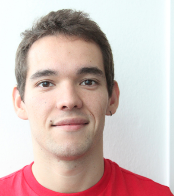

01 Jun 2017 Jenny Read and Bruce Cumming write about our latest work here.
22 May 2017 Current Biology just published our work on understanding stereopsis using artificial neural networks.
16 May 2017 On the way to VSS to talk about neural networks and stereopsis.
11 Jan 2017 I will be at COSYNE presenting our stereopsis modelling work.
30 Jul 2016 Invited talk at the Rank Prize Symposium coming up.
26 Aug 2015 Presenting our work on layer dependent fMRI at ECVP. Hoping to get feedback!
03 Mar 2015 On my way to Cosyne 2015 to present a preference for stereopsis in deep layers of human V1.
01 Feb 2015 Our paper on disparity organization is out in the Journal of Neuroscience.
14 Apr 2014 Poster accepted at VSS 2014: Disparity organization revealed using 7T fMRI.
01 Dec 2013 Moved to the University of Cambridge. You can find me in the Adaptive Brain Lab.

Nuno Gonçalves
Department of Psychology, University of Cambridge, Cambridge, CB2 3EB, UK
nrg30 at cam dot ac dot uk
copyright © Nuno Gonçalves